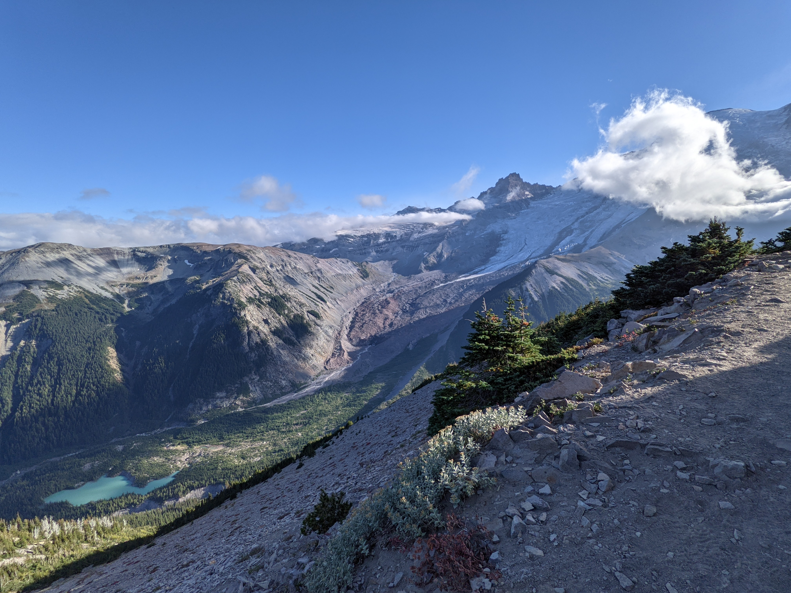

Emmons Glacier and White River
Nearby, you can see small plants growing on the edge of a tundra area. In the distance, you can see Emmons Glacier, the beginning of White River, and a bright blue glacial lake.
Glacial lakes are often this color because of tiny pieces of rock and sand eroded by the glacier, called glacial flour.
You can see how the river has eroded a path through the valley.